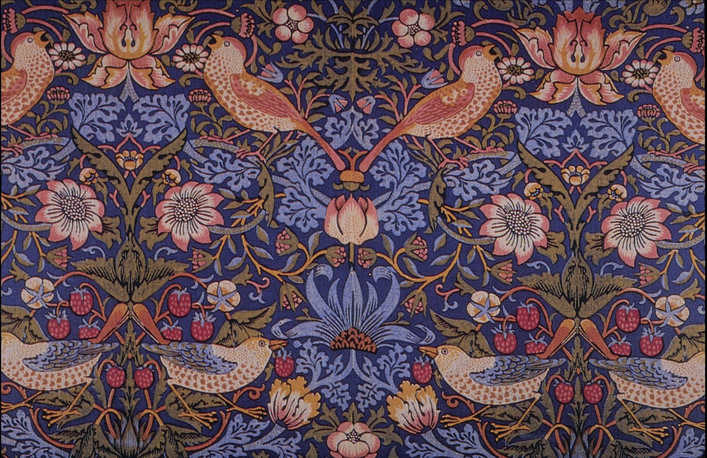

Across a field of deep indigo cloth, thrushes carry strawberries in their beaks, weaving between honeysuckle and rose — a scene William Morris waited seasons to catch in his own garden: the very birds that kept stealing his strawberries, caught red-handed and printed straight into the fabric. Registered in 1883, this pattern is one of the rare textile designs in history that has never once gone out of production. More than 140 years later, you can still buy it, direct from Morris & Co., to hang as your own curtains.
Symmetry as breathing room: the design mirrors across a central axis — two thrushes face each other, the strawberries beneath their feet and the roses above answering one another, unfolding like a fan. That symmetry means the repeat always finds a clean center point once it's cut and seamed into curtains or upholstery.
A very Victorian horror vacui: Morris insisted on covering every inch of ground — vines, leaves, and blossoms layer on top of one another until almost no flat, empty color survives. That density was itself an ambition of the era's textile design: the busier the pattern, the more visibly it justified its craft and its cost.
Dense, but never chaotic: two depths of blue keep background and foreground legible — a deep indigo ground underneath, a lighter cobalt scrollwork tracing a second layer above it — while the warm-toned thrushes and strawberries sit on their own top layer, so the eye never gets lost in the foliage.
The color logic here is simple: a complementary pair — indigo (cool, blue-violet) against coral and brick-red (warm, orange-red). Colors sitting directly opposite each other on the color wheel produce a "the-longer-you-look-the-brighter-it-gets" vibration, which is exactly why this cloth never reads as a flat wash of blue, even from across a room.
Morris never let the warm tones spread across the whole surface — he confined them to the thrushes' feathers, the strawberries, and a handful of flower centers. Warm color covers well under fifteen percent of the design, but because it sits against such a large field of cool color, it's the first thing the eye finds. It's the classic formula: a small area of high-saturation warmth against a large field of low-saturation cool.
Strawberry Thief used one of the most demanding printing processes of its day: indigo-discharge printing. The whole cloth was first dyed a solid, saturated blue; carved wood blocks then applied a bleaching agent to strip color back out of the areas meant to carry other hues; further blocks then printed yellow, red, and green back in, layer by layer. Between discharging, block-printing, washing, and drying, a single length of cloth could take an entire month.
Morris spent nearly six years experimenting with the process at his Merton Abbey Workshops in Surrey before he mastered it. He was famously stubborn about using natural indigo dye, refusing the cheaper, faster synthetic aniline dyes that had already become standard by the 1880s — he considered their color "cheap and garish," unable to hold up over time.
The design came straight out of daily life: Morris grew strawberries in the garden of his Cotswolds home, Kelmscott Manor, and the thrushes kept stealing them. Rather than fight the birds, he simply drew the crime scene into the pattern — the birds' hunched, pecking posture is rendered with an almost field-notebook accuracy.
Strawberry Thief is one of the rare patterns in textile history that has never once lapsed out of production since its 1883 registration — Morris & Co. still produces limited runs using the original indigo-discharge method, and the V&A holds an original example printed around 1883 (museum number T.586-1919).
What makes it move you: the cloth is static, the pattern is a repeat, the thrushes are frozen mid-gesture — and yet the vibration of complementary color, the breathing rhythm of mirrored composition, and a small, slightly mischievous story about theft give this flat surface the illusion of motion. That's the hardest trick in decorative art: faking "alive" inside a static repeat that has no timeline to tell a story in. For 140 years, from middle-class parlor curtains to today's scarves and fashion collaborations, this thrush has barely left public view — proof that a genuinely good decorative design can outlast any single trend by a century and more.
William Morris (1834–1896) was an English designer, poet, printer, and early socialist activist, and the central figure of the Arts and Crafts Movement. He rejected the coarse, machine-stamped ornament that industrialization had made cheap and common, and famously argued you should "have nothing in your house that you do not know to be useful, or believe to be beautiful." In 1861 he co-founded the decorative arts firm Morris & Co., and over his lifetime designed more than fifty wallpaper and textile patterns, nearly all of them drawn from the garden he tended himself and the plants of the English countryside. He died in London in 1896; Strawberry Thief remains one of Morris & Co.'s best-selling designs to this day.